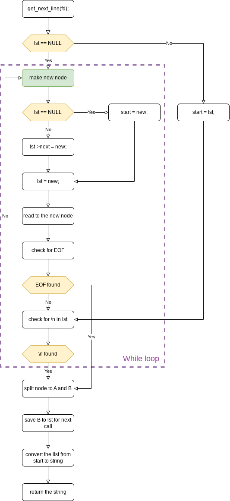

get_next_line: My first complex program

Things that seem simple, often are the most difficult. I knew this, but now I have also experienced it in coding.
For the project get_net_line, I wrote a function in C that - well - gets the next line from a text file. See the file below for an more extensive description of the project.
My experience
After reading the subject for the first time, I was excited to get started. It felt like a challenge, but I thought also shouldn't be too hard. (Spoiler: I overestimated myself a little there.)
Version #1: using strjoin()
I started by writing the main function, called get_next_line() and calling imaginary functions in it, so I could get an idea of the skeleton and then I would implement them. This went actually better than expected, and I had a proof of concept in a few days, but there were still bugs present.
The first version of my code would basically execute the following steps:
- Allocate memory the size of the buffer size of the read() to read into
- Read to the allocated memory
- Search for the newline character in the memory
- If none is found, then allocate the same amount of memory again and read to it again
- Search for the newline character in this memory
- If none is found, make a new string by joining them together using strjoin() and free the two old strings
- Repeat until newline is found
- Split the characters read after the newline and save them in an allocated string pointed to by a static pointer to be used next time the function is called
Because of the many unknown variables in the project – like the buffer size of your read(), or the length the line in the text file – you will have to use manual memory allocation with malloc() and you are going to have to do that in a loop.
The problems with the first version weren't with memory allocation however, but had to do with a timeout I got on a tester that I used for this project. I spent a few days trying to understand what it was and where it came from, but without success
My best guess was that it had to do something with the fact that strjoin() was at the core of my code, which is quite inefficient. That is because the further we get to the to end of the line, the more operations need to be done every time we want to read a little bit more. Every time we read the buffer size we need to ...
- Measure the length of the part we already have saved
- Allocate a new string
- Copy the saved part over to the new string as well as the newly read part
- Free the old ones
I thought of trying to fix the parts together by passing extra parameters about sizes etc but that would greatly clutter the code and not fix the fundamental flaw that this approach had.
Version #2: using linked lists
That is why I decided to start over all together. I had an idea but that was a bit too complex for me to do without properly think it through beforehand. That is why I first made this system-diagram:

It helped me a lot to do this! It was very nice to be able to think through how I wanted my code to function and being able to design it well, without having to actually write code.
It also helped me in the process of writing code, because the hardest part of the process (the designing) I already had done. I could focus on actually implementing my ideas and translating them to code, which allowed me to work more precisely.
But, I was working with a new concept I didn't fully grasp yet (linked lists) and that made that I got some memory leak issues that where hard for me to deal with and to catch. Luckily I found some really helpful people in my school who gave me a hand by looking into the code and thanks to their tips I was able to finally solve the issues after a couple of days.
The end result
I am very happy with the end result, because the code is honestly very fast now and I am honestly proud that I have been able to make something I wasn't able to do before the project. Please have a look at the code if you like!